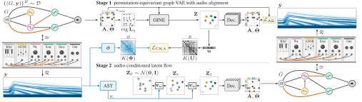

1Acoustics and Audio Group, University of Edinburgh 2STMS Lab, IRCAM–CNRS–Sorbonne University 3School of Informatics, University of Edinburgh
Submitted to IEEE ICASSP 2027 · paper and code to follow
Audio inversion, or sound matching, is the task of finding the settings of an audio system that reproduce a target sound. Prior work assumes systems have a broadly fixed structure, which limits the range of sounds it can match. This work instead approaches the task as a graph problem, generating a system’s structure and settings jointly as an arbitrary composition of modelled processor types. We propose GRAFT, a two-stage audio inversion process. We first define an autoencoder that maps graphs to a set of node embeddings, aligned according to the sound each graph produces. A flow-based generative model is then trained to produce new graphs that approximate a target audio clip. Across graphs of up to 40 modules, GRAFT produces a playable system for 99–100% of targets, whereas prior tokenised flow-based methods fail to reliably generate valid systems for larger graph sizes. The proposed alignment strategy further reduces audio reconstruction error by up to 14% for graphs of up to 20 connected modules. These findings pave the way for further structural learning across a variety of audio processing systems.
The output of a modular audio system depends on both its modules’ control parameters and their routing topology. Sound-matching methods to date fix the topology and invert the parameters; a modular system would instead require a dense supergraph of all configurations, which grows exponentially with the number of modules. We therefore treat the system itself as the object to generate.
A graph $G=(V,E)$ describes the system. Each node $v\in V$ is a module with a discrete type $\tau_v$ and a continuous parameter vector $\boldsymbol\theta_v\in\mathbb R^{P_{\tau_v}}$; each edge $e_{u,v}\in E$ has a class $\kappa_{u,v}$ and features $\boldsymbol\psi_{u,v}$. The renderer $\mathcal R(G)=\mathbf y$ produces audio and is treated as a black box. In the trivial case of a single node with no edges, this recovers fixed-topology parameter modelling.
The generated graph is isomorphic to this one with matching type labels (exact recovery); its continuous parameters are its own.
Many distinct graphs produce perceptually equivalent audio, and every graph has as many labellings as it has node permutations. The task is therefore to model the distribution of valid graphs over the pre-image
with a model invariant to relabelling, $p(\pi\cdot G\mid\mathbf y)=p(G\mid\mathbf y)$ for any permutation $\pi$.
GRAFT is trained in two stages. Stage 1 is a permutation-equivariant autoencoder that maps a graph to a set of node embeddings, organised according to the sound the graph makes. Stage 2 trains a flow-based velocity model over the frozen distribution of those embeddings, conditioned on audio.

Each node is indexed into one of $n_{\max}$ slots, with a binary presence indicator. Every graph here is directed and acyclic, so direction is encoded through the magnetic Laplacian
whose eigenpairs, computed over the active subgraph, are compressed and concatenated to each node’s features. A GINE encoder outputs a factorised Gaussian posterior over the node set, $q_\phi(\mathbf Z\mid G)=\prod_s\mathcal N(\mathbf z_s;\boldsymbol\mu_s,\operatorname{diag}\boldsymbol\sigma_s^2)$, and the decoder reads adjacency and edge classes through bilinear heads and node presence, type and parameters through small MLPs.
The renderer is a black box, so no audio gradient reaches the graph. A small parameter error can therefore be a large perceptual one. We organise the latent space by sound instead: the posterior means are pooled and projected to a low-dimensional read-out $\mathbf u_i=\mathbf W\operatorname{LN}(\bar{\mathbf z}_i)+\mathbf b$, and the neighbourhoods of $\mathbf u$ are matched to those of a fixed audio descriptor $\boldsymbol\phi(\mathbf y)$ by centred kernel alignment over a self-tuning Gaussian affinity,
Alignment acts on an 8-dimensional read-out rather than on the latents directly, so it organises a small audio-relevant subspace while the remaining directions stay free for reconstruction. GRAFT-CQT and GRAFT-STFT differ only in $\boldsymbol\phi$ (a constant-$Q$ transform or a log-frequency STFT); GRAFT-Unaligned sets $\lambda_{\rm align}=0$.
With the autoencoder frozen, a conditional rectified flow transports a standard Gaussian to the distribution of node-set embeddings,
with pairs coupled by minibatch optimal transport. The velocity network is a diffusion transformer without positional encodings, so it is permutation equivariant, and the audio condition $\mathbf c(\mathbf y)$ from an Audio Spectrogram Transformer enters through cross-attention. Sampling integrates the flow with fourth-order Runge–Kutta over 100 steps under classifier-free guidance, and the frozen decoder turns $\mathbf Z_1$ into a graph.
Each row is one conditioning clip; each column is the render of the graph a method generated for it. In domain, the clip is the render of a held-out graph from the same corpus. Out of domain, it is an NSynth note or an ESC-50 environmental recording, which no synthesiser in the corpus produced exactly. A hatched cell is a generated graph that does not render.
We compare against flow baselines that share our interpolant but differ in tokenisation and symmetry bias. FM-Param2Tok tokenises each parameter and edge as a set element, FM-Node adds per-node positional encodings, and FM-Flat is a single vector with no symmetry. At $n_{\max}\in\{10,20,40\}$ the baselines flow over a dense vector of 450, 1500 and 5400 dimensions; GRAFT’s representation is $d_z\times n_{\max}$ = 320, 640 and 1280.
GRAFT renders 99.4–100% of conditions at every size, whereas the baselines become unstable as graphs grow: FM-Flat and FM-Param2Tok render under 18% of in-domain conditions at $n_{\max}=20$, and at $n_{\max}=40$ FM-Node renders 12.8% and FM-Param2Tok none. Each GRAFT variant attains the lowest spectral error at every size and in every domain.
Graph metrics are in domain only: out of domain there is no reference graph. $|\Delta n|$, $|\Delta e|$: node- and edge-count error; gr.: exact graph recovery (isomorphism with type labels); F1: node-type F1. Audio distances are averaged over successful renders only. One training seed per arm; best per size block in bold.
For $n_{\max}\in\{10,20\}$ both aligned variants outperform GRAFT-Unaligned on all four audio distances, in domain and on NSynth. GRAFT-CQT is strongest in domain, while GRAFT-STFT is strongest out of domain at $n_{\max}=10$ on both NSynth and ESC-50, consistent with the constant-$Q$ transform’s resolution of harmonic structure suiting pitched material and the STFT’s suiting broadband sound. Alignment also improves graph recovery: at $n_{\max}=10$, GRAFT-CQT raises exact recovery from 37.5% to 42.1%. At $n_{\max}=40$ the advantage disappears.
To see whether graphs that sound alike are embedded nearby, we measure CKA between held-out pooled latents $\bar{\mathbf z}$ and a multi-resolution log-mel descriptor that no variant was trained on. The aligned variants score 0.39–0.53 at every size against 0.13–0.21 for GRAFT-Unaligned, at an equal or higher stage-1 reconstruction error. Since CKA holds at $n_{\max}=40$, the advantage lost there is lost in Stage 2, not in the alignment.
@misc{turland2027graft,
title = {Generating Modular System Topologies with
Audio-Aligned Latent Graph Flows},
author = {Turland, Sean and Wright, Alec and
Bilbao, Stefan and Storkey, Amos},
note = {Submitted to IEEE ICASSP 2027},
year = {2026}
}